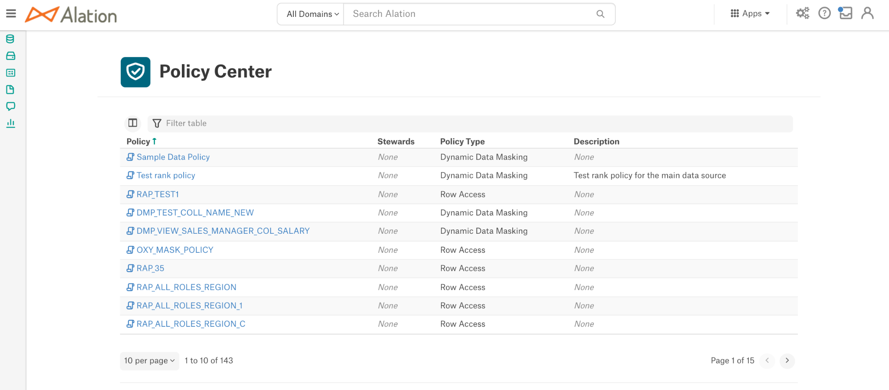

Curating Policies¶
Alation Cloud Service Applies to Alation Cloud Service instances of Alation
Customer Managed Applies to customer-managed instances of Alation
The Policy Center page displays all the policies (Dynamic Data Masking and Row Access) extracted from the Snowflake data sources during metadata extraction as well as any manually created Policies.
The following information can be viewed on the Policy Center page:
Policy - Name of the policy
Stewards - Stewards of the policy. Click on the Stewards to view the details of the Stewards.
Policy Type - Type of the policy such as Dynamic Data Masking or Row Access.
Description - Description of the policy.
Note
The description of the policy and the Stewards will be empty until the details are added to the policy during curation.
Curate Policies¶
The extracted policies that are displayed in the Policy Center can be curated by the Alation users (Viewers cannot curate Policies if role enforcement is enabled). Click on any policy to view the catalog page of this Policy object and curate the following sections:
Description - Click the Edit icon to add/edit the description of the policy.
Data Managed by this Policy - This section displays the objects added to a policy. Users can add columns to any Data Masking Policy, refer to Apply a Data Masking to Columns.
Note
For Row Access Policies, you cannot add rows to the extracted policy. This must be performed directly in Snowflake or using Compose.
SQL Rules - This is a read-only section that displays the SQL rules which are applied to the columns or rows of the objects added to the policy. If any changes are to be made to the rules, it must be done in Snowflake or from Compose and extracted into Alation.
Properties - This is a read-only section that displays the following:
Type of policy
Name of the data source to which this policy is applied
Policy name
Owner of the policy
Last updated date.
Stewards - Click the Plus icon to add the Stewards to the policy.
Tags - Click the Plus icon to add tags to the policy.
Add custom fields to the catalog page of the policy, refer to Applying Custom Fields to Templates.
Apply a Data Masking to Columns¶
Alation users who are authorized to use Snowflake data source with the service account credentials can add columns to any extracted Snowflake Data Masking Policies. Before you add a column to a Policy:
Make sure that Policy and Column are from the same data source. A column cannot be added to a Policy that is created for a different data source. You can Create a Policy in Compose for your data source and add the column.
Make sure that the data type specified in the SQL rules of a Policy matches with the data type of the column. An error notification email will be sent to the user if the data type does not match.
Note
A column can have only one policy applied at a time.
Make sure that the column does not have an existing policy. An error notification email will be sent to the user if a policy currently exists.
Perform the following steps to add columns to a policy:
In the Data Managed by This Policy section, click the Add Column button.
In Connect to the Data Source window,
In Choose a connection to <data source_name>, use a saved connection that is already connected or provide the URI manually.
In Choose a user on <data source_name>, use a saved credential or provide the Snowflake service account username and password. If the data source is configured with OAuth URI, username and password is not required in this window.
Click Test and Continue. If you use service account credentials or if you use OAuth credentials click Test Authorization and if the authorization is successful, click Next.
In the Add Columns to <data source_name> dialog, click the Add Columns button and select the columns. Click Save to finish adding the columns.
Note
A column can have only one policy applied at a time.
A message will appear with the information that the columns will be updated in Alation during the next metadata synchronization. Click Close to close the dialog.
Click See all button to view all the columns added to the policy.
Once the column is added to a policy, the policy name will be displayed on the Catalog page of the column and a notification email of successful addition of the policy to the column will be sent to the user. The columns added in Alation syncs with Snowflake after a slight delay.
{kind=link}
{kind=link}
Remove Columns from a Policy¶
In release 2021.3, removing columns from a policy can only be done using a query from Compose or Snowflake UI. Columns cannot be removed from policies in the Alation Catalog UI.
Creating New Policies¶
Create a Policy in Compose¶
Alation users whose Snowflake user accounts are authorized to create Policies can do so using Compose.
If a Policy is created or deleted and an object is added or deleted to or from a Policy through Compose, it may take up to two hours for the policy rules to be reflected in the Snowflake tables or views. After this time MDE needs to be performed again for the changes to be reflected in Alation.
To create a policy in Compose, authenticate to your Snowflake data source using your account credentials or your OAuth credentials (if the Snowflake data source is configured to use OAuth for Compose authentication). Write a query providing the SQL rules for the policy as per the instructions provided for each policy type in Snowflake:
Example SQL rule for a Data Masking Policy:
create or replace masking policy PC_DB.PC_SCH_1.DMP_sales_manager_col_salary_1 as (salary_1 bigint) returns bigint -> case when current_role() in ('OXY_ROLE') then salary_1 else -1 end;Example SQL rule for a Row Access Policy:
CREATE OR REPLACE ROW ACCESS POLICY PC_DB.PC_SCH_1.RAP_all_roles_region_1 AS (region_1 VARCHAR(100)) RETURNS BOOLEAN -> case when current_role() = 'SALES_MANAGER' and region_1 = 'Asia' then true when current_role() = 'OXY_ROLE' and region_1 = 'Europe' then true else false end;Users can also perform the following in Compose:
Add or remove objects for a Policy
Delete the Policy
Create a Policy in Snowflake UI¶
If a Policy is created or deleted and an object is added or deleted to or from a Policy through Snowflake UI, it may take up to two hours for the policy rules to be reflected in the Snowflake tables or views. After this time MDE needs to be performed again for the changes to be reflected in Alation.
Configuring Policy Workflows¶
Server and Catalog Admins require the ability to create and deploy change management workflows for policies and beginning in Version 2022.2, now can configure workflows to manage changes on the catalog pages of policy and data policy objects. Catalog users can suggest a change to the catalog fields for policies or data policies that are enrolled into a change management workflow.
Policy change management workflows are similar to the change request workflows for RDBMS objects, please refer to Managing Workflows for steps on creating, renaming, editing, deleting, publishing and unpublishing change request workflows.